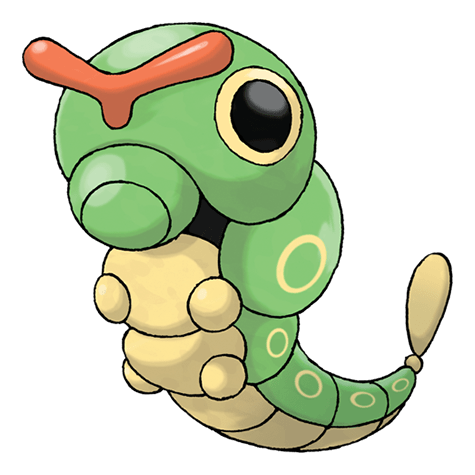
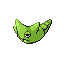

Катерпи

Катерпи — Покемон 1 поколения под номером 10 в Покедекс. Обитает он в регионе Канто и относится к Жучиному типу. У Катерпи ненасытный аппетит. Он может пожирать листья размером больше, чем его тело, прямо на глазах. Этот Покемон испускает ужасно сильный запах из своей антенны.
Тип и слабости:
Жук
Эволюция
# 010 Катерпи
=>

# 011 Метапод